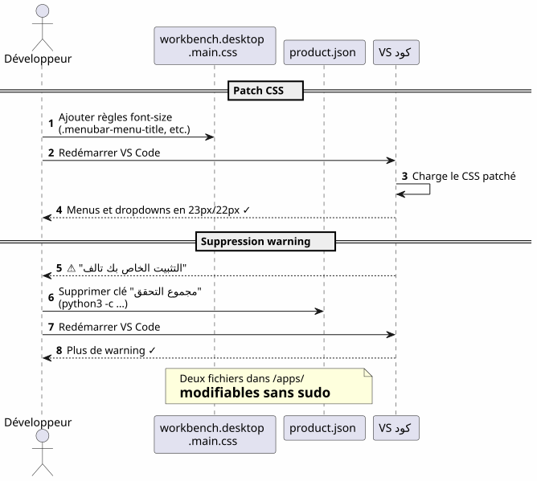

VS Code في Home : التثبيت المحلي وتخصيص الخطوط دون sudo
Publié le 17 April 2026
لماذا تثبيت VS Code في`/opt`أو عبر`apt`عندما يمكنك وضعه في منزلك وتحويل IDE الخاص بك إلى ساحة لعب دون أن تكتب أبدًا`sudo`? هنا قصة تثبيت محلي تبعها صراع شرس لتكبير خطوط القائمة ومستكشف الملفات
- طقطق
-
[]
نظرة عامة على المسار
Failed to generate image: PlantUML preprocessing failed: [From <input> (line 6) ]
@startuml
skinparam backgroundColor #FEFEFE
skinparam componentStyle rectangle
actor Développeur as dev
actor "opencode
^^^^^
Syntax Error? (Assumed diagram type: sequence)
@startuml
skinparam backgroundColor #FEFEFE
skinparam componentStyle rectangle
actor Développeur as dev
actor "opencode
+ LLM" as agent
package "البيت المستخدم (~)" #LightGreen {
package "~/apps/" {
component "VS Code
(tarball)" as vscode #SkyBlue
component "vscode-update.sh" as script #LightYellow
}
package "~/.config/Code/" {
component "settings.json" as settings #Lavender
}
package "~/.vscode-custom-css/" {
component "custom.css
(التكبير: 1.25)" as customcss #Lavender
}
}
cloud "code.visualstudio.com" as download
dev --> vscode : Télécharge & installe
dev --> script : Lance mise à jour
script --> download : wget dernière version
script --> vscode : Remplace + re-patch CSS
agent --> settings : Écrit config
agent --> customcss : Écrit zoom CSS
agent --> vscode : Patch workbench CSS
note right of vscode
Installation dans le home
= contrôle total sans sudo
end note
@enduml
السبب : VS Code في المنزل
المشكلة مع تثبيت النظام
تم تثبيت VS Code عبر`apt`, dnf`أو في/opt`يقفل ملفات التطبيق خلف أذونات الجذر. أي تعديل على CSS الأصلي، من`product.json`أو يتطلب مجلد التثبيت`sudo`.
لكن، عندما يستخدم أحدأوبن كود(أداة واجهة سطر أوامر لتشغيل نموذج لغوي كبير على كوده)، يحتاج الوكيل إلى القدرة على :
-
اكتب في ملفات التكوين`~/.config/Code/User/settings.json`) — هذا، هذا بالفعل في المنزل
-
عدّل أصول الـ IDE (CSS بيئة العمل,
product.json) للتخصيصات المتقدمة — هذا، محظور بدون sudo
الحل: تثبيت محلي
نحمّل الأرشيف tarball الرسمي ونفكّ ضغطه مباشرةً في`~/apps/`:
mkdir -p ~/apps
cd ~/apps
wget "https://code.visualstudio.com/sha/download?build=stable&os=linux-x64" -O vscode.tar.gz
tar -xzf vscode.tar.gz
rm vscode.tar.gzالثنائي موجود الآن في`~/apps/VSCode-linux-x64/bin/code`. لا شيء`sudo`ليس ضروريًا للقراءة أو التعديل أو استبدال أي ملف تحت`~/apps/VSCode-linux-x64/`.
المزايا الملموسة
Failed to generate image: PlantUML preprocessing failed: [From <input> (line 12) ]
@startuml
skinparam backgroundColor #FEFEFE
rectangle "تثبيت النظام\n(/opt, apt, dnf)" #LightCoral {
card "VS Code ملكية الجذر" {
[CSS du workbench : sudo requis]
[product.json : sudo requis]
[Dossier d'install : non modifiable]
}
}
rectangle "التثبيت الرئيسي
^^^^^
Syntax Error? (Assumed diagram type: component)
@startuml
skinparam backgroundColor #FEFEFE
rectangle "تثبيت النظام\n(/opt, apt, dnf)" #LightCoral {
card "VS Code ملكية الجذر" {
[CSS du workbench : sudo requis]
[product.json : sudo requis]
[Dossier d'install : non modifiable]
}
}
rectangle "التثبيت الرئيسي
(~/apps)" #LightGreen {
card "ملكية مستخدم VS Code" {
[CSS du workbench : libre]
[product.json : libre]
[Dossier d'install : libre]
[Script update maison]
}
}
"تثبيت النظام\n(/opt, apt, dnf)" -right-> "التثبيت الرئيسي
(~/apps)" : **Non, merci**\nJe prends le home
note bottom of "التثبيت الرئيسي
(~/apps)"
L'agent opencode+LLM peut
modifier les fichiers de l'IDE
sans aucune élévation de privilèges
end note
@enduml
| ميزة | تفصيل |
|---|---|
لا sudo |
جميع ملفات الـ IDE تخص المستخدم |
تعديل مباشر لـ CSS |
يمكننا تصحيح`workbench.desktop.main.css`بدون رفع الصلاحيات |
سكريبت التحديث المنزلي |
سكريبت شيل بسيط يقوم بالتحميل، الاستبدال وإعادة التصحيح تلقائيًا |
عزل |
تثبيت النظام ليس ملوثًا؛ التراجع = حذف المجلد |
خصّص خط القائمة الرئيسية
الملاحظة
الخط الافتراضي للقائمة الرئيسية (ملف، تحرير، عرض…) والقوائم المنسدلة صغير جداً. لا يوفّر VS Code أي إعداد لتعديلها.
التقنية : تصحيح CSS مباشر
نضيف CSS إلى نهاية الملف`workbench.desktop.main.css`( empty )

CSS_FILE="$HOME/apps/VSCode-linux-x64/resources/app/out/vs/workbench/workbench.desktop.main.css"
cat >> "$CSS_FILE" << 'EOF'
.menubar-menu-title{font-size:23px!important}
.menubar>.menubar-menu-button{font-size:23px!important}
.monaco-menu-option{font-size:22px!important;line-height:34px!important}
.monaco-menu .action-label:not(.codicon){font-size:22px!important}
.menubar-menu-items-holder .monaco-menu .action-item .action-label{font-size:22px!important}
EOFحذف تحذير النزاهة
VS Code يكتشف تعديلاته على ملفاته ويعرض شريطًا يحمل النص "Your installation is corrupt". لتجنبه، نحذف مجاميع التحقق de`product.json`:
import json
product_json = "$HOME/apps/VSCode-linux-x64/resources/app/product.json"
with open(product_json, 'r') as f:
data = json.load(f)
data.pop('checksums', None)
with open(product_json, 'w') as f:
json.dump(data, f, indent=2)بعد إعادة التشغيل، لم يعد هناك تحذير وأصبحت القوائم قابلة للقراءة أخيرًا.
خصص خط جزء المستكشف — القتال
المحاولة 1: معلمة غير موجودة
نحاول أولًا المعلمة الأصلية`workbench.tree.fontSize`في`settings.json`:
{
"workbench.tree.fontSize": 20
}النتيجة :لا تأثير. هذا الإعداد غير موجود في VS Code. الدليل على أن الإعدادات غير المعترف بها تُتجاهل بصمت.
محاولة 2: الامتداد Custom CSS and JS Loader
نُثبّت الإضافة`be5invis.vscode-custom-css`:
~/apps/VSCode-linux-x64/bin/code --install-extension be5invis.vscode-custom-cssنقوم بإنشاء ملف CSS في`~/.vscode-custom-css/custom.css`مع محددات تستهدف عناصر المستكشف :
.monaco-tree-rows .monaco-tree-row,
.sidebar .monaco-list-row,
.explorer-viewlet .monaco-list-row,
.monaco-list-row .monaco-icon-label {
font-size: 22px !important;
line-height: 36px !important;
}ونشير إلى هذا الملف في الإعدادات :
{
"vscode_custom_css.imports": [
"file:///home/user/.vscode-custom-css/custom.css"
]
}النتيجة :التغييرات لا تُطبق.
الفخ: يجب تفعيل الإضافة في كل مرة
وثائق الإضافة صامتة حول هذه النقطة الحاسمة: بعد كل تعديل على CSS المخصص، يجب أنضروريًانفذ الأمر من اللوحة:
-
Ctrl+Shift+P→ يكتبتمكين CSS و JS مخصص -
VS Code يطلب إعادة التشغيل → قبول
بدون هذه الخطوة، لا يتم حقن CSS أبدًا في بيئة التطوير المتكاملة.
المحاولة 3 : الخطوط تتداخل
حتى مع`font-size: 22px` et line-height: 36px, الحروف ذات الساق (g, p, f, b) تتدفق على الخطوط المجاورة. نحاول إضافة`height` et min-height(No output, as the text to translate is empty)
.monaco-list-row {
height: 36px !important;
min-height: 36px !important;
}النتيجة :لا تغييرVS Code يحسب ارتفاعات الأسطر في JavaScript ويتجاوز قيم CSS.
الحل : zoom على الحاوية الأصلية
Failed to generate image: PlantUML preprocessing failed: [From <input> (line 5) ]
@startuml
skinparam backgroundColor #FEFEFE
rectangle "محاولة 1
معلمة غير موجودة" #LightCoral {
^^^^^
Syntax Error? (Assumed diagram type: activity)
@startuml
skinparam backgroundColor #FEFEFE
rectangle "محاولة 1
معلمة غير موجودة" #LightCoral {
card "workbench.tree.fontSize" as t1 {
[VS Code ignore le paramètre]
}
}
rectangle "محاولة 2
CSS مخصص + حجم الخط" #LightYellow {
card ".monaco-list-row { font-size: 22px }" as t2 {
[Texte plus grand\nmais lignes superposées]
}
}
rectangle "محاولة 3
font-size + line-height + height" #LightYellow {
card "الارتفاع: 36px !important" as t3 {
[VS Code override\npar JavaScript]
[Aucun effet]
}
}
rectangle "الحل
تكبير على الحاوية الأم" #LightGreen {
card "python
print(".monaco-list-rows { zoom: 1.25 }", end='')" as t4 {
[Texte + espacement\nproportionnels]
[Layout JS respecté]
[✓ Résultat conforme]
}
}
t1 -down-> t2 : Pas de paramètre ?\nOn essaie le CSS
t2 -down-> t3 : Lignes superposées ?\nOn force la hauteur
t3 -down-> t4 : Override JS ?\nOn utilise zoom
@enduml
بدلاً من محاربة تخطيط JavaScript، نستخدم الخاصية`zoom`على حاوية الأسطر:
.explorer-viewlet .monaco-list-rows,
.sidebar .monaco-list-rows {
zoom: 1.25;
}`zoom`يتوسّع عرض الحاوية بشكل موحد — النص والمسافة — دون إتلاف التخطيط الذي يحسبه محرك JavaScript في VS Code. العامل 1.25 يقارب تقريباً الانتقال من 13px إلى 16px.
النتيجة:أصبحت أسماء الملفات قابلة للقراءة الآن، والخطوط متباعدة بشكل صحيح.
ملخص المحددات وما يعمل
| النهج | CSS | النتيجة |
|---|---|---|
|
|
نص أكبر لكن الخطوط متداخلة |
|
|
لا تأثير (override JS) |
|
|
ناجح — النص + التباعد المتناسب |
سكريبت التحديث التلقائي
Failed to generate image: PlantUML preprocessing failed: [From <input> (line 5) ]
@startuml
skinparam backgroundColor #FEFEFE
autonumber
actor "مطوّر
^^^^^
Syntax Error? (Assumed diagram type: sequence)
@startuml
skinparam backgroundColor #FEFEFE
autonumber
actor "مطوّر
أو cron" as dev
participant "vscode-update.sh" as script
participant "vscode tarball\n(code.visualstudio.com)" as remote
participant "~/apps/
VSCode-linux-x64" as local
participant "~/apps/\nvscode-backup" as backup
participant "workbench
.desktop.main.css" as css
participant "product.json" as product
dev -> script : ./vscode-update.sh
script -> local : Lire version courante
script -> remote : wget dernière version
script -> script : Comparer versions
alt Version identique
script --> dev : "محدث مسبقًا!"
else Nouvelle version
script -> backup : Sauvegarder installation courante\n(horodatée)
script -> local : rm -rf ancienne installation
script -> local : mv nouvelle installation
script -> css : Ajouter patch CSS\n(menubar 23px, dropdown 22px)
script -> product : Supprimer checksums\n(python3)
script --> dev : "التحديث مكتمل
1.xx.yy → 1.zz.ww"
end note
@enduml
المشكلة
عند تحديث VS Code، يحل محل مجلد التثبيت واحذف جميع تصحيحات CSS. يجب إعادة تطبيق التعديلات يدويًا في كل مرة.
السكريبت `vscode-update.sh
نُنشئ`~/apps/vscode-update.sh`(No output, as the text to translate is empty)
#!/bin/bash
set -e
VSCODE_DIR="$HOME/apps/VSCode-linux-x64"
BACKUP_DIR="$HOME/apps/vscode-backup"
TEMP_DIR="/tmp/vscode-update"
MENUBAR_FONT_SIZE="23px"
DROPDOWN_FONT_SIZE="22px"
echo "=== VS Code Local Updater ==="
CURRENT_VERSION=$("$VSCODE_DIR/bin/code" --version 2>/dev/null | head -1)
echo "Current version: $CURRENT_VERSION"
echo "Downloading latest VS Code..."
mkdir -p "$TEMP_DIR"
wget -q "https://code.visualstudio.com/sha/download?build=stable&os=linux-x64" \
-O "$TEMP_DIR/vscode.tar.gz"
echo "Extracting..."
mkdir -p "$TEMP_DIR/extracted"
tar -xzf "$TEMP_DIR/vscode.tar.gz" -C "$TEMP_DIR/extracted"
NEW_VERSION=$("$TEMP_DIR/extracted/VSCode-linux-x64/bin/code" \
--version 2>/dev/null | head -1)
echo "New version: $NEW_VERSION"
if [ "$CURRENT_VERSION" = "$NEW_VERSION" ]; then
echo "Already up to date!"
rm -rf "$TEMP_DIR"
exit 0
fi
echo "Backing up current installation..."
mkdir -p "$BACKUP_DIR"
cp -r "$VSCODE_DIR" "$BACKUP_DIR/VSCode-linux-x64-$(date +%Y%m%d-%H%M%S)"
echo "Updating..."
rm -rf "$VSCODE_DIR"
mv "$TEMP_DIR/extracted/VSCode-linux-x64" "$VSCODE_DIR"
rm -rf "$TEMP_DIR"
CSS_FILE="$VSCODE_DIR/resources/app/out/vs/workbench/workbench.desktop.main.css"
echo "Re-applying custom CSS patch \
(menubar=${MENUBAR_FONT_SIZE}, dropdown=${DROPDOWN_FONT_SIZE})..."
cat >> "$CSS_FILE" << CSSEOF
.menubar-menu-title{font-size:${MENUBAR_FONT_SIZE}!important}\
.menubar>.menubar-menu-button{font-size:${MENUBAR_FONT_SIZE}!important}\
.monaco-menu-option{font-size:${DROPDOWN_FONT_SIZE}!important;\
line-height:34px!important}\
.monaco-menu .action-label:not(.codicon)\
{font-size:${DROPDOWN_FONT_SIZE}!important}\
.menubar-menu-items-holder .monaco-menu .action-item .action-label\
{font-size:${DROPDOWN_FONT_SIZE}!important}
CSSEOF
PRODUCT_JSON="$VSCODE_DIR/resources/app/product.json"
if [ -f "$PRODUCT_JSON" ]; then
echo "Removing checksums to prevent integrity warning..."
python3 -c "
import json
with open('$PRODUCT_JSON','r') as f: data=json.load(f)
data.pop('checksums', None)
with open('$PRODUCT_JSON','w') as f: json.dump(data,f,indent=2)
print('Done.')
"
fi
echo "=== Update complete: $CURRENT_VERSION -> $NEW_VERSION ==="سكريبت :
-
نزّل الإصدار المستقر الأحدث
-
تحقق مما إذا كان الإصدار يختلف عن الحالي
-
احفظ التثبيت الحالي (مؤرّخ بوقت) في`~/apps/vscode-backup/`
-
استبدل مجلد التثبيت
-
أعد التطبيقتصحيح CSS للقائمة الرئيسية
-
احذف مجموعيات التحقق de `product.json`لتجنب تحذير النزاهة
| التخصيصات لجزء المستكشف عبر إضافة Custom CSS والملف`~/.vscode-custom-css/custom.css`ينجون من التحديثات لأنهم يعيشون خارج مجلد التثبيت |
الملفات المتورطة — نظرة عامة
Failed to generate image: PlantUML preprocessing failed: [From <input> (line 6) ]
@startuml
skinparam backgroundColor #FEFEFE
skinparam componentStyle rectangle
rectangle "تثبيت VS Code
(~/apps/VSCode-linux-x64/)" #LightCoral {
^^^^^
Syntax Error? (Assumed diagram type: activity)
@startuml
skinparam backgroundColor #FEFEFE
skinparam componentStyle rectangle
rectangle "تثبيت VS Code
(~/apps/VSCode-linux-x64/)" #LightCoral {
component "workbench.desktop\n.main.css" as css #LightCoral
component "product.json" as product #LightCoral
component "ثنائي
bin/code" as binary #LightCoral
}
rectangle "تكوين المستخدم\n(~/.config/Code/)" #LightGreen {
component "settings.json" as settings #LightGreen
component "الإضافات/" as extensions #LightGreen
}
rectangle "التخصيص المستمر\n(~/.vscode-custom-css/)" #SkyBlue {
component "custom.css
(zoom: 1.25)" as customcss #SkyBlue
}
rectangle "أتمتة
(~/apps/)" #LightYellow {
component "vscode-update.sh" as script #LightYellow
component "vscode-backup/" as backup #LightYellow
}
script ..> css : Re-patch après MAJ
script ..> product : Supprime checksums\naprès MAJ
settings --> customcss : Référence via\nvscode_custom_css.imports
extensions ..> css : Custom CSS Loader\ninjecte custom.css
note bottom of css
**Ne survit pas** aux mises à jour
Re-patché par le script
end note
note bottom of customcss
**Survit** aux mises à jour
Vit hors du dossier d'installation
end note
note bottom of settings
**Survit** aux mises à jour
Vit dans ~/.config/
end note
@enduml
| طريق | دور | هل يبقى على قيد الحياة بعد التحديثات؟ |
|---|---|---|
|
تثبيت بيئة التطوير المتكاملة |
لا (مستبدلة) |
|
CSS من منصة العمل (القوائم، القوائم المنسدلة) |
لا (تم إعادة تصحيحه من قبل النص) |
|
مجموع التحقق من التكامل |
لا (تم إعادة تنظيفه بواسطة البرنامج) |
|
سكريبت التحديث التلقائي |
نعم |
|
إعدادات المستخدم (fontSize, CSS مخصص) |
نعم |
|
CSS مخصص لـ Explorer (تكبير) |
نعم |
الدروس المستفادة
Failed to generate image: PlantUML preprocessing failed: [From <input> (line 7) ]
@startuml
skinparam backgroundColor #FEFEFE
skinparam defaultFontName sans-serif
skinparam ArrowColor #444444
rectangle "**التثبيت المحلي**
في المنزل" as install #LightGreen {
^^^^^
Syntax Error? (Assumed diagram type: activity)
@startuml
skinparam backgroundColor #FEFEFE
skinparam defaultFontName sans-serif
skinparam ArrowColor #444444
rectangle "**التثبيت المحلي**
في المنزل" as install #LightGreen {
card "لا sudo
لتعديل CSS/config" as i1
card "opencode+LLM يمكنه
تعديل كل شيء" as i2
card "التراجع = استعادة النسخة الاحتياطية المختومة بالوقت" as i3
}
rectangle "تخصيص CSS
التكبير مقابل حجم الخط" as css #LightYellow {
card "zoom > font-size\n للقائمة المكونات" as c1
card "تجاوز جافاسكريبت للتخطيط
الارتفاع/ارتفاع السطر" as c2
card "امتداد Custom CSS
يتطلب تفعيل يدوي
(Ctrl+Shift+P)" as c3
}
rectangle "**الأتمتة**
سكربت التحديث" as auto #LightCoral {
card "إعادة تصحيح CSS بعد\n كل تحديث" as a1
card "حذف checksums\n product.json" as a2
card "النسخ الاحتياطي بتاريخ ووقت
قبل الاستبدال" as a3
}
install -right-> css : ensuite
css -right-> auto : enfin
note top of install
Contrôle total sans élévation
de privilèges
end note
note top of auto
Sans script, chaque MAJ
efface les patches CSS
end note
@enduml
التثبيت في المنزل يحرر كل شيء
تثبيت محلي في`~/apps`يمنح تحكمًا كاملاً على VS Code :
-
لا`sudo`لتعديل CSS أو الإعداد
-
يمكن للوكيل opencode+LLM الكتابة في ملفات الإعداد وأصول بيئة التطوير المتكاملة
-
تراجع بسيط : استعادة النسخة الاحتياطية الموقوتة
zoom` > font-size للمكونات القائمة
VS Code يتحكم في ارتفاع الأسطر عبر JavaScript. عدّل`font-size`بدون القدرة على لمس الارتفاع المخصص من قبل محرك التخطيط يؤدي إلى نصوص تتجاوز الحدود. الخاصية`zoom`على الحاوية الأم، يتم تكبير كل شيء بشكل متناسب ويتجنب هذه المشكلة.
امتداد Custom CSS يتطلب تفعيلًا صريحًا
هذا ليس معلمة "set and forget". كل تعديل على ملف CSS المخصص يتطلب إعادة تنفيذ "Enable Custom CSS and JS" من لوحة الأوامر (Ctrl+Shift+P).
سكريبت التحديث ضروري
بدون نص برمجي، كل تحديث لـ VS Code يمسح تصحيحات CSS الخاصة بـ Workbench. النص البرمجي`vscode-update.sh`يعمل على أتمتة التنزيل، والاستبدال، وإعادة التصحيح، وتنظيف مجاميع التحقق.
مراجع سريعة
-
تنزيل VS Code : https://code.visualstudio.com/Download
-
ملحق محمل CSS و JS مخصص :`be5invis.vscode-custom-css`
-
مشكلة VS Code تطلب إعدادًا أصليًا لخط المستكشف :https://github.com/microsoft/vscode/issues/149[github.com/microsoft/vscode#149]